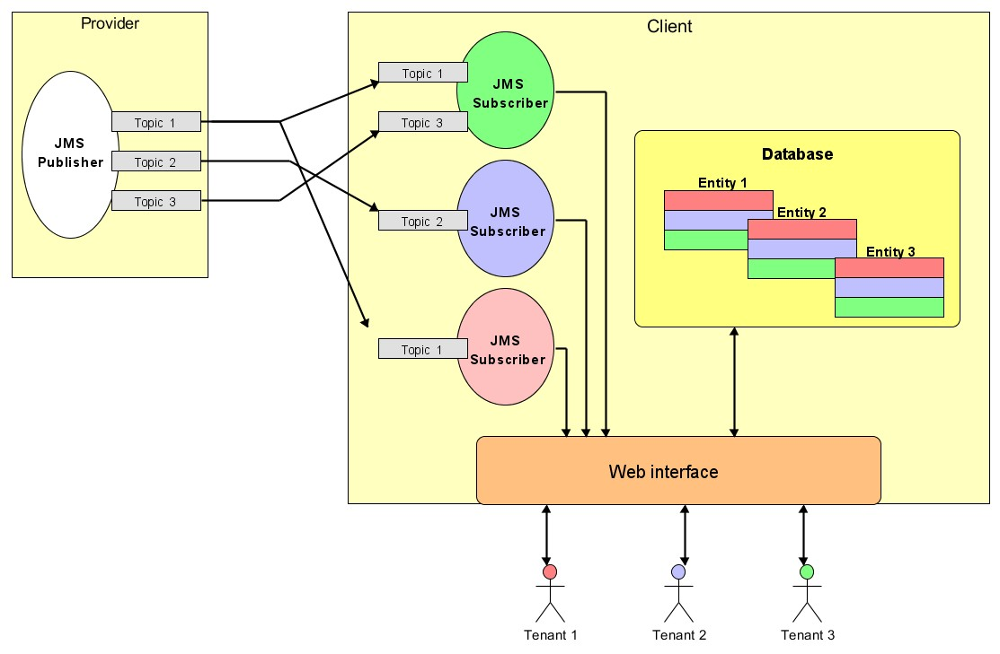

Koncepcja rozwiązania
Użytkownicy systemu
- administrator główny
- ma dostęp administracyjny do Cloud Foundry
- zarządza konfiguracją Providera
- dodaje administratorów dla poszczególnych tenantów (za pomocą interfejsu webowego)
- administrator (dla danego tenanta)
- ma dostęp do aplikacji poprzez interfejs webowy
- ma dostęp do panelu adminsitracyjnego aplikacji poprzez interfejs webowy
- decyduje o monitorowanych przez tenanta spółkach
- dodaje zwykłych użytkowników do systemu
- zwykły użytkownik
- ma dostęp do aplikacji poprzez interfejs webowy
- podczas tworzenia jest automatycznie przypisywany do określonego tenanta (na podstawie tenanta administratora, który dodaje użytkownika)
Konfiguracja systemu
- opcje konfiguracji dla Providera zapisane w pliku
- konfiguracja klienta poprzez interfejs webowy
- opcje konfiguracji dla Klienta zapisane w odzielnej tabeli w bazie
Zabezpieczenie aplikacji i modelowanie tenantów
- użytkownik, aby móc skorzystać z systemu, musi się zalogować, podając login i hasło
- podczas logowania z bazy jest “wyciągany” identyfikator TENANT-ID, który “krąży” w sesji podczas, gdy użytkownik jest zalogowany
- dane w bazie są współdzielone przez tenantów, a każdy wiersz posiada dodatkowo pole TENANT-ID w celu identyfikacji tenantów
- dostęp tenantów do odpowiednich dla nich danych jest realizowany na poziomie warstwy DAO (zapytania modyfikowane w taki sposób, aby zawierały TENANT-ID)
Technologie i narzędzia
- komunikacja JMS: RabbitMQ
- Spring MVC do budowy aplikacji klienta
- baza danych: MySQL lub vFabric Postgres
- persystencja: Hibernate
- Spring Security - uwierzytelnianie użytkowników